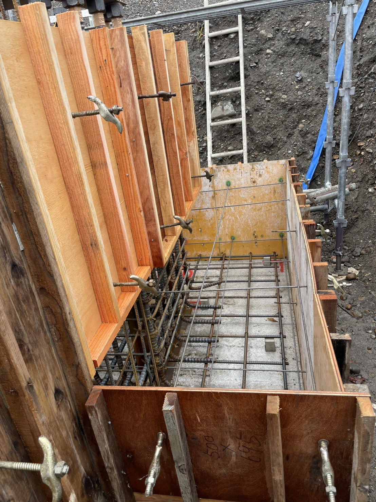
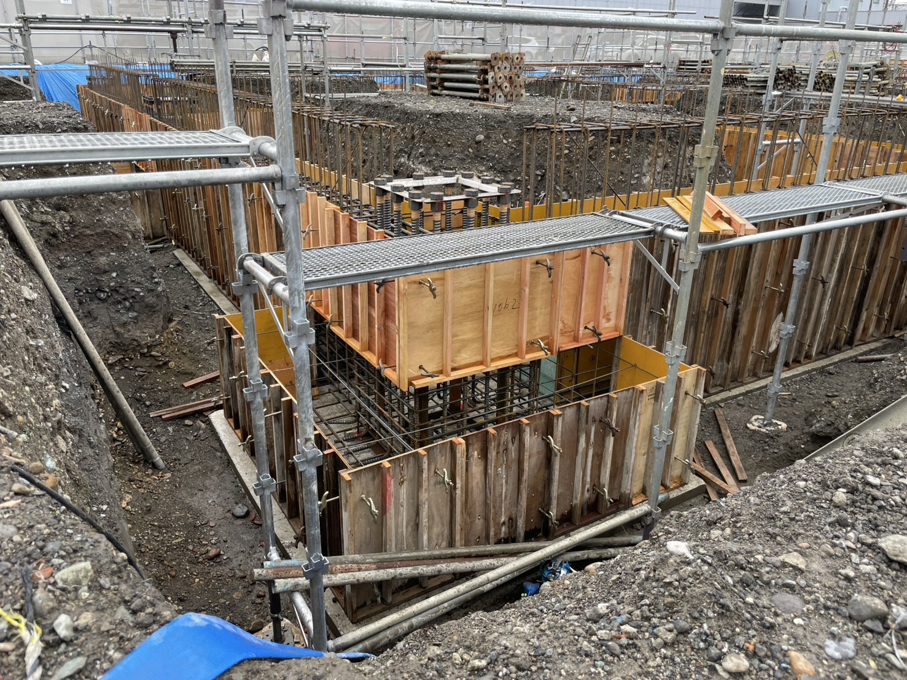
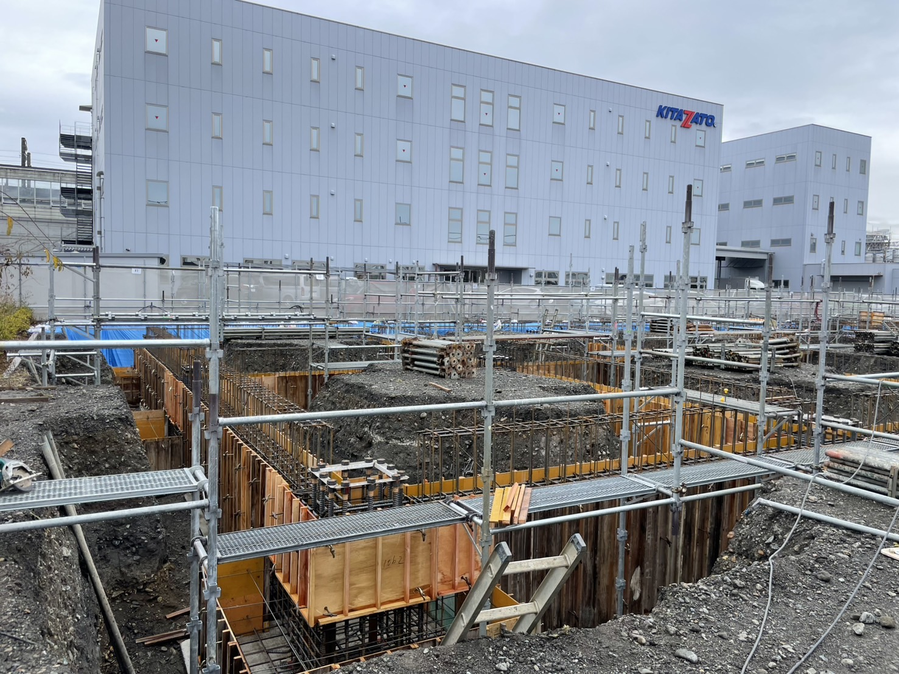
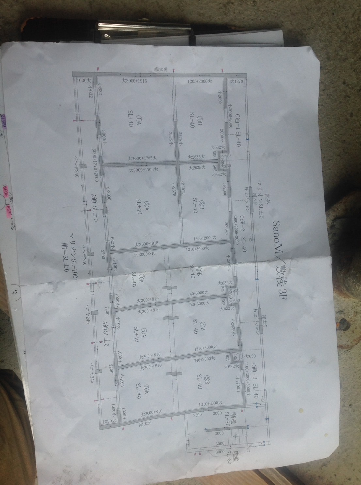
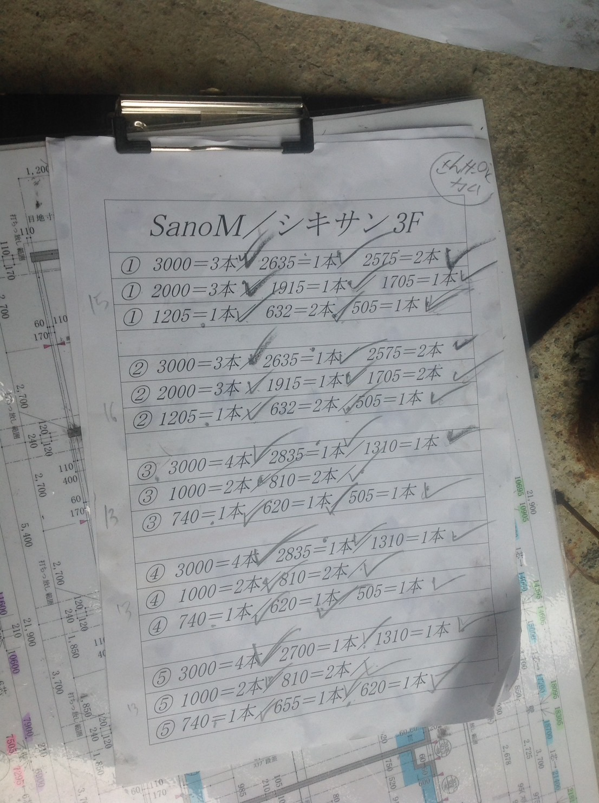
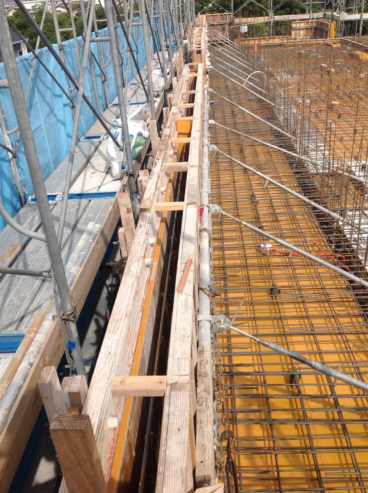
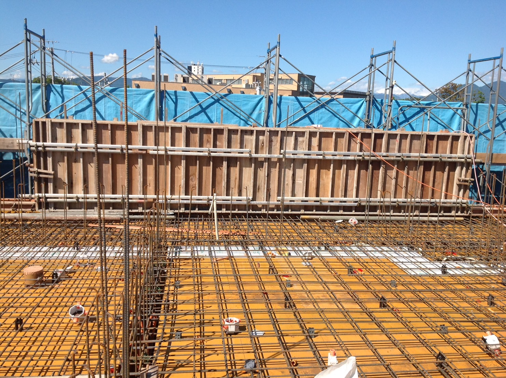

ສະບາຍດີ🙏🏻ຍີນດີຕ້ອນຮັບສູ່ເວັບໄຊຮັບງານຂອງພວກເຮົາແລະຂອບໃຈທີທ່ານເລືອກໃຊ້ບໍລິການຂອງເຮົາແລະໄດ້ບໍລິການທ່ານ❤️
👉🏻ວິດີໂອດ້ານເທີງຄືທິວທັດບັນຍາກາດການກໍ່ສ້າງໃນປະເທດຍີ່ປຸ່ນ




ການຕີແບກເທຄານກ່ອນຈະໃສ່ປູນຊີມັງ , ປະເທດຍີ່ປຸ່ນມາດຕະຖານການກໍ່ສ້າງເປັນເລື່ອງສຳຄັນທີຕ້ອງໃສ່ໃຈຄວາມລະອຽດເພາະວ່າຍີ່ປຸ່ນມັກມີແຜນດິນໄຫວ
ສະນັ້ນການເທຄານແລະໃສ່ເຫຼັກສຳຄັນຫລາຍ



